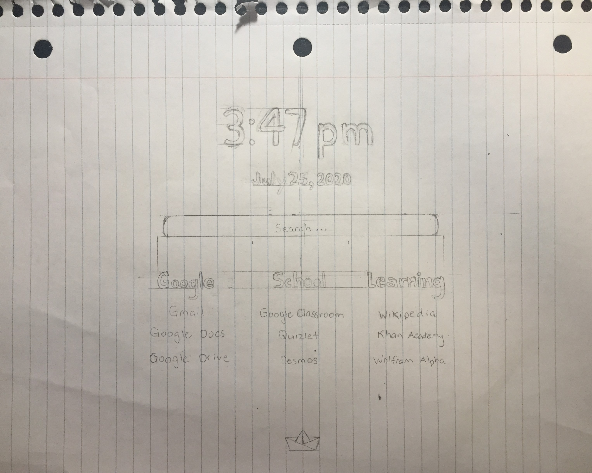
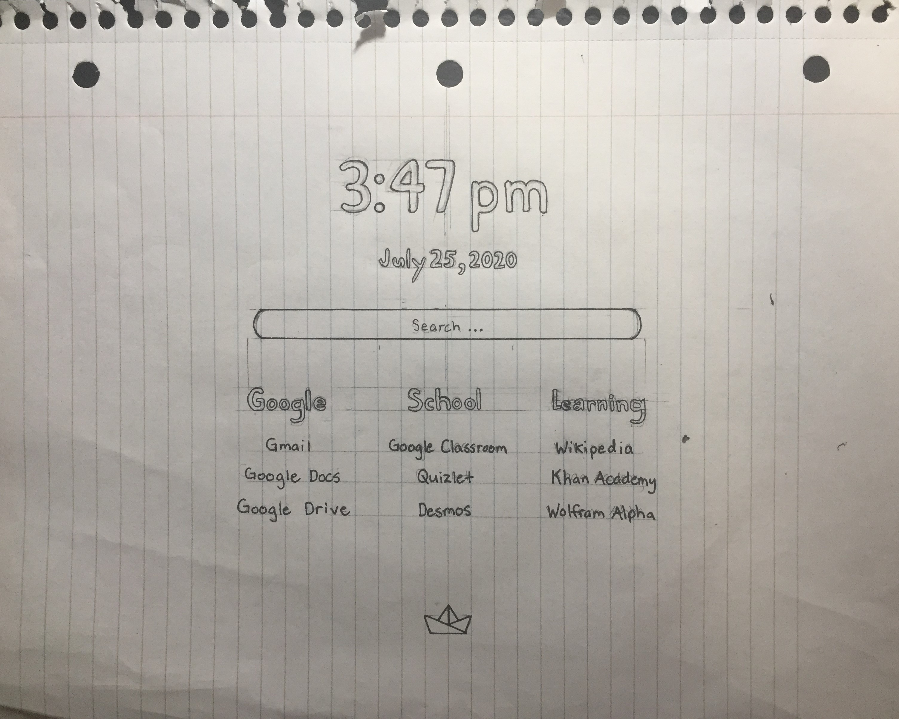
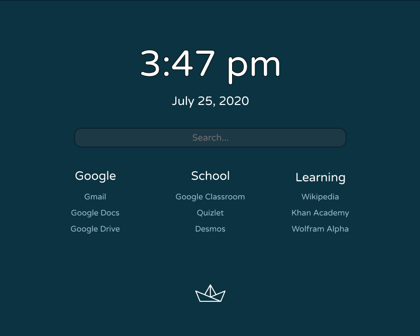

Drift was inspired by the ocean at night as well as my affinity for origami boats. The start page's design shows a paper boat drifting in the dark, yet moonlit, ocean. The night aspect is also reflected in the favicon, which is a crescent moon.
I started off by thinking about color choices and inspiration. I settled on a deep teal background and a contrasting white for the text. My inspiration, as stated above, was an origami boat floating in the ocean at night.
Then, I browsed Google Fonts to pick out a sans serif font. I ended up choosing Varela Round because I liked the roundness. I also liked that the font looks playful at larger sizes but serious at smaller sizes.
 Next, I sketched out a general layout with pencil. I thought about what I personally wanted in a start page. So, I included the time, date, a search bar, and several links. After feeling satisfied, I outlined it with pen.
After that, I used Figma to create a mockup of my design.
Finally, I had the design done. I used Visual Studio Code to code the start page. I used flexbox to make the links responsive. When the screen gets smaller, the three columns change into two columns and then one column. The transition when the columns change isn't the smoothest but it still works, since most people don't resize their browser too often. I also changed up the design a little bit by adding another link for each column and changing the color (and border) for each column.
I hope you enjoy Drift!